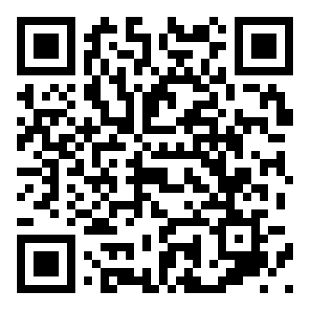

Sauvage in your space
The bottle appears in front of you, at real size — point at the floor

Scan with your phone to place Sauvage in your space
Unsolicited concept study — not affiliated with, commissioned by, or endorsed by Parfums Christian Dior or LVMH. A Reasoned Web piece.